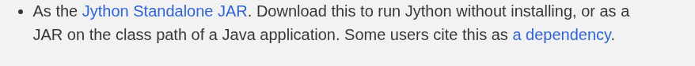
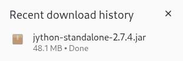
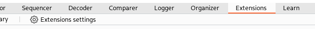
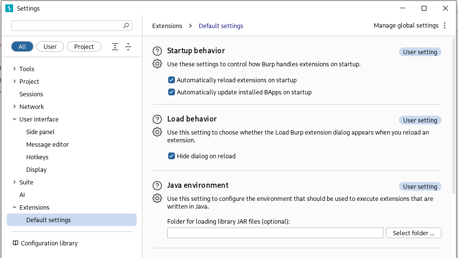
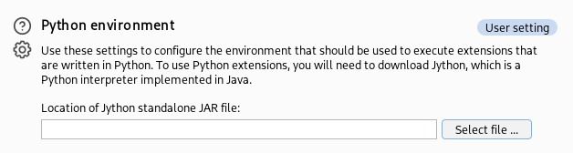
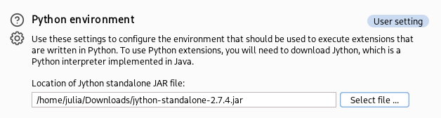
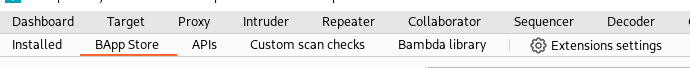
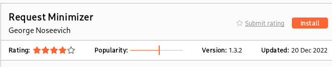

How to install extensions
As you can se below, to use certain extensions from Burp suite you must install Jython - which you don't have to know what it is - but it is very simple to set up.

Go to https://www.jython.org/download.html and make sure to click on the Standalone link
(Check twice, i've already made the mistake to download the wrong version)
Now go to Burp and in the main tab look for "Extensions" and then click in "Extensions settings". This will open a new wizard:
This will open a new wizard:
Scroll down to "Python environment", hit "Select file" and locate your jython file
After selecting your file, click "Open" and if you can see the location of your file it's all done.
ps: You can also move the extension to another directory other than Downloads so that you don't delete it accidentaly when cleaning files;
Now go to "BApp Store" (another tab within the "Extensions" one).
Then clean your search bar, re-search the desired extension and you can see the button is now enabled and you can install your extension.
